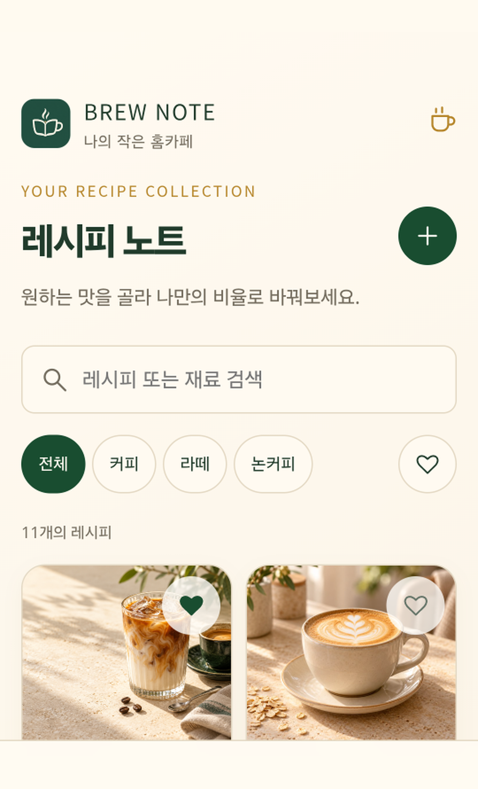
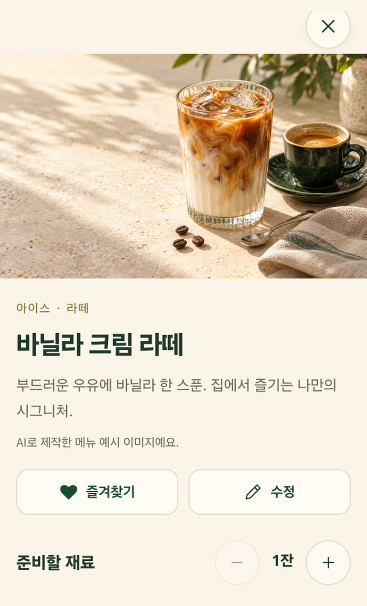
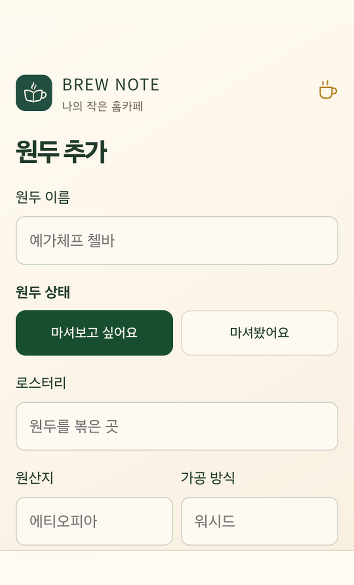

어제 그 맛있던 라떼,
비율
기억나세요?
우유 150? 200?
시럽 한 펌프였나…
샷은 몇 개였더라
홈카페는
매번 맛이 달라요
너무 진하고
너무 밍밍하고
어제 그 맛은?
이제, 기록해요
BREW NOTE
브루노트커피
내 취향의 한 잔을 기록하는 레시피
나만의
레시피 노트
원하는 맛을 골라 나만의 비율로
준비할
재료도 한눈에
잔 수까지 정하고 시작해요
단계별로
따라 하기
추출 타이머까지 함께
원두도
기록해요
마셔본 원두, 마셔보고 싶은 원두



오늘의 한 잔,
내 취향대로.
MY RECIPE
기록
완료 ✓
앱 설치 없이
토스에서 바로
🔍
☕ 내 레시피 기록하기
바로가기 링크는 설명란에 👇